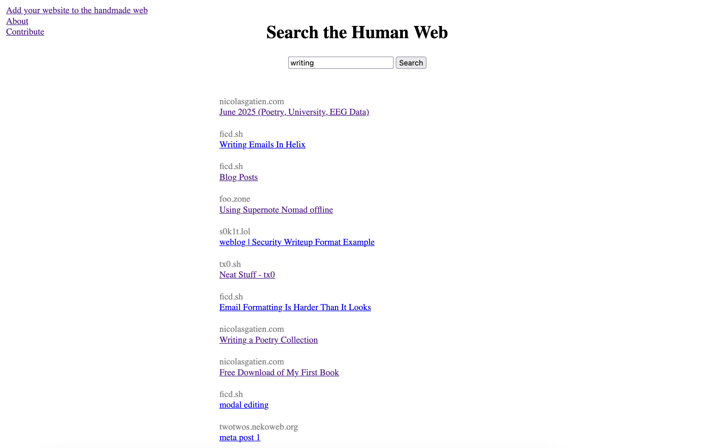

Hello! 👋
Here's a quick update regarding what I've been up to in January!
Coding a Search Engine
I'm coding a search engine which only indexes personal websites. I really enjoy browsing the internet and finding weird niche projects and websites that people have made, but it's very difficult to do so. Much of the internet are corporate pages trying to sell you something, or organizations explaining what they do.
But I find the most interesting parts of the internet are written by individuals and hosted on their personal websites. The problem is finding them can be challenging. The goal of the search engine I'm making is to facilitate browsing / exploring the web instead of searching it.
It's still in a very early and rudimentary phase, for example, here's what the search interface looks like:

You can try it out here: https://handmade.nicolasgatien.com/
I'm still trying to come up with a name for the search engine before I purchase a domain for it. I've thought of naming it after archaic navigational tools, but I haven't found one I think fits it quite right yet.
If you have a personal website, and would like it to be indexed, just reply to this email with a link to your website, and I can index its pages.
Fencing Tournaments
I competed in two different fencing tournaments.
I competed in the Carleton Invitational Team Tournament in Men's Epée category. This was my first sports fencing tournament rather than HEMA. I volunteered on Saturday and worked at the armoury, doing gear checks all day for all the disciplines fencing on Saturday. On Sunday I competed with a team from Kanata Fencing. We placed 25th out of 30 teams. I have lots of room to improve.
Back in the land of historical fencing (HEMA), I participated in a smallsword and dagger tournament organized by the Glengarry Broadsword Academy. The dagger is held in the offhand and the smallsword in the mainhand. The dagger is mainly a parrying tool to manipulate your opponent's sword while they attack, but it can also be used as a weapon in close quarters. The problem is that if you're in range to stab them with your dagger, they are also in range to stab you with theirs, and most of the time you will both stab each other. So stabbing with the dagger is not a recommended strategy.
Last year I scored 4th place in this tournament, and this year I scored 3rd!

Interesting Links
- schlaugh is a "social media" website where each person can only make one post per day, and they are all published at the same time.
- wiby.me is a search engine for non-commercial websites.
Those are my highlights of this month.
I'll be back in your inbox in ~30 days.
Thanks for reading 👋
Nicolas Gatien